| Movie Name | Synopsis | Thumbnail/Watch |
|---|---|---|
| The Spinning Horror | A man sees a spinning entity in his home and it kills him. My first movie, awful. | 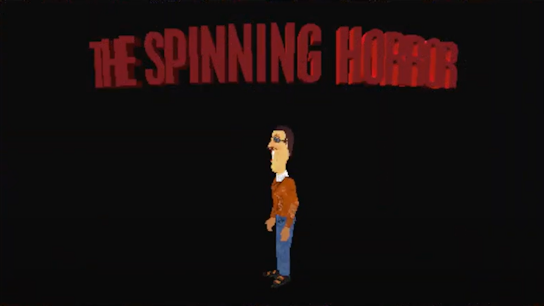 |
| Scatman John Dies to Gustave | Gustave kills Scatman John after seeing his face. My second film, still kinda sucked. | 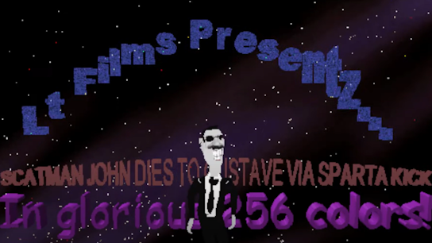 |
| Wrong Side Of The Tracks | A railroad worker loves his job until his twin brother is killed by a train. | 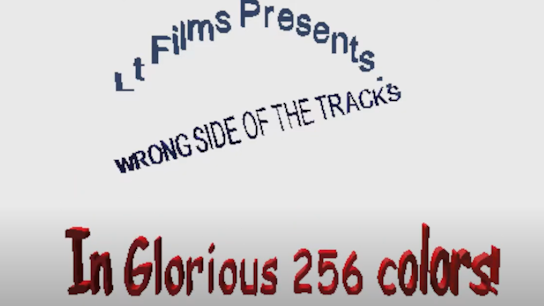 |
| The Great Bank Heist (ORIGINAL) | 2 dudes decide its their day to die. | |
| The Death Chair | Gustave gets electrocuted by the electric chair. | 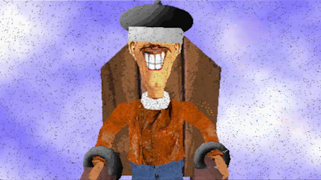 |
| The Duel | 2 people participate in a duel in a bar. Made to just test a sound effect. | 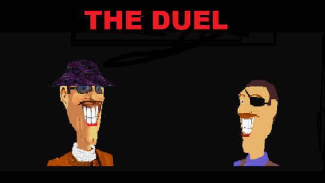 |
| Gustave Wars | My First PAM Movie. Ehhh, idk how to feel about it. | 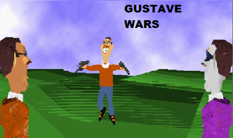 |
| Malloy Sniper Test | Gerald Malloy sees a guard ahead, finds a rifle, and blows the guard's brains out. | 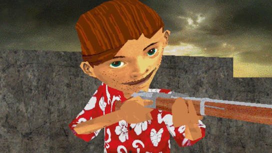 |
| Gusintegrate. | The most absurd thing I've made. H U M O R. | |
| The Sniper @ Santa's Workshop. | A hastily made Christmas special about a guy who kills Santa after finding out Christmas is cancelled. My personal favorite movie from 2024. | 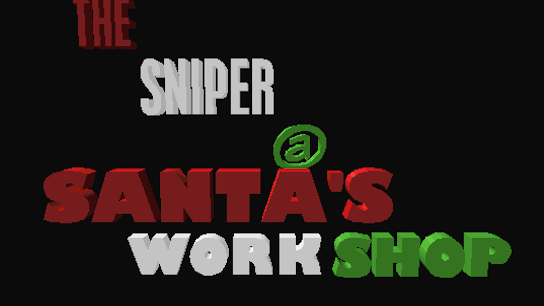 |
| The Great Bank Heist: Reheisted | A group of 4 plot and accomplish a bank robbery. | 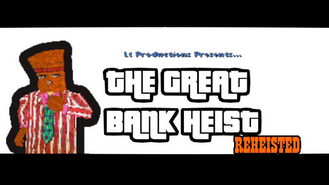 |
| DAWN | A quickly made short about a man who is pessimistic about the new years. | 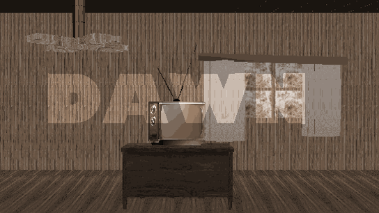 |
| Swallowed. | A man has a nightmare about his consciousness taking form into a physical manifestation. | |
| Plop Town 2: Can't Trustin Justin | In The Great North, Plopilpy struggles with avoiding Canadian groundation, going to sleep on time, and dealing with the recent resignation of Justin Trudeau. | 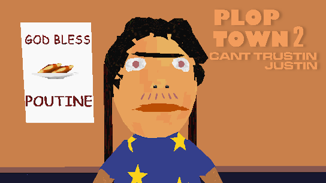 |
| MoonJug | 5 Years after killing a sheriff's wife, Charles "Boneyard" Houser (or Charles "Moonjug" Houser) finds a quiet town called Greenfield to settle down in. He finds out the husband of the woman he killed is Sheriff Pluckett. What will happen next? You find out. |  |